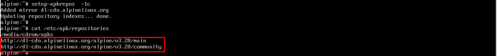

Na disposición (layout) escribe es.

Na variante depende do teclado que teñas (p.e. es-winkeys para un teclado con teclas Windows). En caso de dúbida escribe de novo es.
O proceso remata con erros na configuración da interface de rede eth0. Esta interface correspóndese co único adaptador virtual de rede que ten a VM. Neste caso non podemos usar DHCP (a opción por defecto) para asignar unha configuración de rede automaticamente a dita interface porque non temos un servizo DHCP configurado no servidor Proxmox. Debido ao fallo na configuración de rede, tamén falla a configuración dos repositorios de software. Vamos a arranxar manualmente estes problemas nos seguintes pasos.

Primeiro, acepta (sen escribir nada) a opción por defecto para configurar a interface eth0. Cubre os seguintes datos a medida que se che vaian pedindo:
- Enderezo IP: 10.10.10.100/24
- Gateway: 10.10.10.2
Escribe n (ou acepta sen escribir nada) para indicar que non queremos facer máis configuracións manuais da rede.
NOTA: Se te trabucas configurando a interface, podes repetir este paso executando de novo o comando setup-interfaces.
NOTA: Podes repetir o comando setup-hostname no caso de introducir mal o hostname.
Escribe icap para o nome de dominio DNS e a IP do servidor de nomes que proporciona Virtualbox xa preconfigurado na interface NAT: 10.0.2.3.
NOTA: Podes repetir este paso executando de novo o comando setup-dns no caso de introducir mal algún dato.
IMPORTANTE: asegúrate de que se configuran correctamente os repositorios comprobando o contido do ficheiro /etc/apk/repositories como ves na imaxe.

Recoméndase usar "icap" (sen as aspas). Aínda que é un contrasinal moi curto e sinxelo, como xa se nos indica ao introducilo, válenos igualmente para o propósito desta práctica. Ten en conta que tes que introducilo dúas veces. Se decides usar outro contrasinal, é moi importante que despois te lembres del. Se obtés calquera erro neste paso, volve a executar o comando passwd para repetir o proceso.
IMPORTANTE: non uses caracteres "raros" para o contrasinal, porque vamos ter que usalo nalgunha ocasión máis adiante co teclado aínda sen configurar.

Primeiro, acepta a opción por defecto para usar o único disco ríxido (sda) que temos na VM (podes comprobalo nas propiedades de almacenamento da VM no VirtualBox).

No tipo de instalación escribe sys para realizar unha instalación estándar.

Por último, escribe y para aceptar formatar o disco e instalar Alpine nel.
NOTA: non te preocupes se che aparecen unhas mensaxes de advertencia en vermello neste paso (por exemplo: Partition#1 contains a ext4 signature). Non son erros, xa que depende de se é a primeira vez que o estás facendo ou se estás repetindo o proceso de instalación (polo que as particións no disco xa existen e somos avisados diso). Se obtiveses erros, podes repetir este paso executando de novo o comando setup-disk.

Apaga a VM executando o comando poweroff